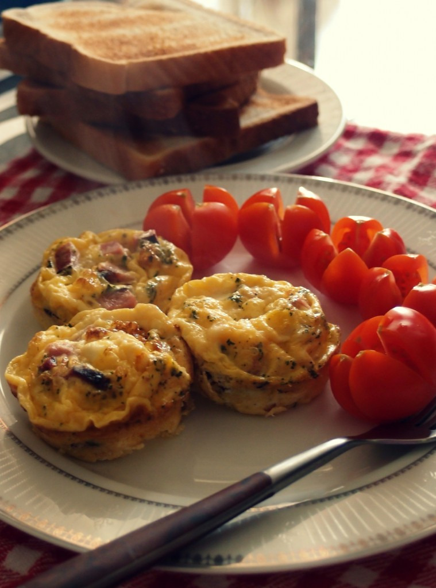

CORNURI PUFOASE CU UNT IN FORMA DE CORONITA | Diva in bucatarie
2021.03.24 11:28
Vezi Retete pe Categorii TOATE RETETELE ARTICOLE UTILE Lifestyle CONCURSURI CONTACT
RETETE RECENTE
RETETE DE POST
BRIOSE DE POST CU NUCA
PRAJITURA DE POST CU NUCA DE COCOS SI VISINE
SUPA CREMA DE LEGUME RETETA DE POST
CORNURI PUFOASE CU UNT IN FORMA DE CORONITA
January 27, 2021 | CATEGORIA
Cornuri pufoase cu unt facute in casa in forma de coronita au miez moale si pufos ce se desface in pale si o coaja usor crocanta, subtire, ce te duc cu gandul la croissante.
Aluatul se desface in straturi, iar gustul de unt te cucereste de la prima bucatica. Sunt atat de bune incat nu rezista pana a doua zi. Eu le-am pregatit gandindu-ma ce le vom manca a doua zi la micul dejun, dar nu au arezistat nici macar pana la cina.
Reteta acestor cornuri pufoase simple cu unt este inspirata din bucataria turceasca.
Cand am inceput sa pregatesc aceste cornuri pufoase cu unt din aluat dospit am plecat de la ideea de a face niste cornuri cu unt in forma clasica, dar in timp ce modelam aluatul mi-a venit ideea sa le modific forma si nu pot decat sa ma bucur ca am facut acest lucru.
Aceste cornuri cu unt in forma de coronite au un gust foarte bun. Pe langa untul foarte gras am mai folosit lapte gras si oua de la gaini crescute libere, la sol. Aluatul nu se face greu deloc. Daca aveti experienta in framantarea aluatului atunci totul va parea o joaca de copil. Puteti sa puneti si un robot/mixer sa framante aluatul. Desi am un robot nou pe care il iubesc, mi s-a facut dor sa framant si sa vad cum se transforma in mana mea o compozitie moale intr-un aluat neted, elastic si omogen.
Daca nu vreti sa modelati aceste coronite, puteti face cornuri clasice taiand aluatul in dreptunghiuri mai late. Fiecare dreptungi il taiati apoi pe diagonala, astfel incat sa obtineti niste tringhiuri pe care le veti rula de la baza mare catre varf.
Aluatul o sa va duca cu gandul la croissante, dar pentru acelea se foloseste doar unt, iar eu am ales sa combin untul cu putin ulei pentru a-l face mai usor de intins cu pensula. Diferenta de gust nu este mare, caci am folosit destul de putin ulei.
Va trebui sa pastrati o cantitate din amestecul de unt cu ulei pentru a unge coronitele cand le scoateti din cuptor. Daca nu va ajunge, va trebui sa folositi unt suplimentar etapa este obligatorie!
Inainte sa va las lista de ingrediente si modul de preparare pentru aceste cornuri pufoase cu unt in forma de coronite va las cateva sfaturi utile:
1. folositi ingrediente de foarte buna calitate: unt grasime 80-82%; lapte grasime 3.5%. 2.toate ingredientele trebuie sa stea la temperatura camerei minim 1 ora 3. sarea pusa in aluat nu trebuie sa intalneasca in mod direct drojdia 3. apa si laptele trebuie sa fie caldute nu fierbinti! 4. nu puneti foarte mult zahar in aluat impiedica cresterea acestuia. 5. nu exagerati cu cantitatea de drojdie folosita veti obtine gust si miros neplacut 6. in functie de puterea cuptorului din dotare timpii de coacere pot fi diferiti si este posibil sa aveti nevoie sa rotiti tava la jumatatea timpului de coacere
Iata lista de ingrediente si modul de preparare pntru cornuri pufoase cu unt in forma de coronita:
INGREDIENTE:
(8 buc mari)
Pentru aluat:
100 ml apa calda
8 g drojdie uscata
1 ou mediu + 1 albus
5 g sare
30 g zahar
50 ml ulei
150 ml lapte cald
500-520 g faina in functie de marimea oului
Pentru umplutura:
100 g unt
50 ml ulei de floarea soarelui
Pentru uns:
1 galbenus ou
1 lingura lapte
In plus:
ulei pentru masa de lucru si pentru vasul in care dospeste aluatul
PREPARARE:
Pentru a pregati aceste cornuri pufoase cu unt am scos cu 1 ora inainte ingredientele si le-am lasat la temperatura camerei.
Am incalzit usor apa si laptele. In apa calda am pus droijdia uscata, am amestecat si am lasat 10 minute sa se hidrateze.
Intr-un bol mare am pus 1 ou de marime medie si un albus, am adaugat sarea si zahar si am amestecat. Am folosit un tel, nu am avut nevoie de mixer.
Am turnat laptele caldut peste oua, am amestecat, apoi apa cu drojdie.
Am incorporat faina treptat, apoi am framantat aluatul pana cand a devenit omogen si nu s-a mai lipit de maini.
Aluatul parea destul delipicios, dar dupa 10-12 trantiri si 5 minute de framantare acesta nu s-a mai lipit de maini. Daca oul este mai mare este posibil sa adaugati 1-2 linguri de faina.
Daca folositi un robot sau un mixer veti sti ca aluatul este gata cand se desprinde de peretii vasului. Am pus aluatul intr-un vas uns cu putin ulei, apoi l-am acoperit cu o folie alimentara. De preferat ar fi sa il acoperiti cu o casca de dus (noua) genul de casca cu elastic care se gaseste in hoteluri caci ii permite sa creasca foarte mult.
Dupa o ora aluatul si-a marit volumul foarte mult, asa ca am trecut la prelucrarea coronitelor cu unt. Am amestecat untul foarte moale cu uleiul, ca sa fie foarte usor de intins.
Am uns masa de lucru cu ulei, apoi intins aluatul intr-un dreptunghi de 39*40 cm cu mainile. Nu am folosit sucitor, caci se intinde foarte usor. Am uns aluatul cu unt, apoi l-am pliat in trei obtinand la final un dreptunghi de 13*40 cm.
Am intins si acest dreptunghi cu mana pentru a-l face mai lat, apoi l-am uns cu unt. L-am pliat in jumatate si l-am intins iar astfel incat sa revin la lungimea de 40 cm. Am taiat 8 fasii cu latimea de 5 cm.
Am rotit fiecare fasie, apoi am format cercuri ce au avut diametru exterior de aproximativ 12-13 cm. Capetele le-am ascuns sub aluat. Am pus coronitele direct in tava de copt tapetata cu hartie de copt. In fiecare tava am pus cate 4 coronite. Nu le-am inghesuit pe toate intr-o singura tava pentru ca nu am vrut ca prin crestere in timpul coacerii sa isi schimbe forma. Le-am acoperit cu un prosop si le-am lasat sa se odihneasca 20 minute, apoi le-am uns cu galbenusul amestecat cu lapte si le-am copt in cuptorul preincalzit la 190°C timp de 20 minute.
In functie de puterea cuptorului vostru este posibil sa aveti nevoie de inca 5 minute sau este posibil sa fiti nevoiti sa scadeti temperatura la 180°C daca se rumenesc prea tare in primele 10 minute, caz in care veti coace coronitele timp de 25 minute (10 minute la 190° si 15 minute la 180°).
Dupa 10 minute de coacere am rotit tava, caci cuptorul meu (desi este electric, este foarte vechi) coace putin mai tare in spate.
Dupa ce am scos aceste cornurti pufoase cu unt sub forma de coronite din cuptor le-am uns cu unt (daca nu ati dozat bine untul puteti folosi suplimentar, astfel incat acesta sa acopere uniform fiecare coronita si sa intre in crusta). Le-am acoperit imediat cu un prosop gros de bucatarie pentru 30 minute.
Daca vi se pare ca sunt tari, veti constata ca dupa ce le ungeti cu unt si le tineti acoperite acestea vor deveni moi. Iar cand le rupeti veti vedea cat sunt de pufoase, cu aluatul care se desface in pale!
Cornurile pufoase cu unt sunt foarte gustoase. Le puteti manca simple sau puteti presara foarte putin zahar.
Sper ca le veti incerca si voi caci, asa cum ati observat in etapele descrise mai sus, nu este nimic complicat.
Daca incercati reteta va astept pozele in grupul Gatesc cu Prietenii Retete gustoase.
Va invit sa ma urmariti si pe canalul de YouTube.
Print Share on Twitter pin it! share on facebook
Comentarii
ClaudiaCe mult imi plac.Sper sa-mi permit si eu dupa dieta.
Reply Diva In BucatarieMa bucur ca iti plac, Claudia!
ReplyADAUGA UN COMENTARIU Cancel reply
urmareste-ne pe
webdesignfotografie profesionala
productie video
Afla mai mult animatie 2D si 3D
print design
social media advertising
Parteneri
© 2017 DIVA IN BUCATARIE | toate drepturile rezervate | website realizat de WEBEFEKTIV.RO Vezi Retete pe Categorii TOATE RETETELE ARTICOLE UTILE Lifestyle CONCURSURI CONTACT- Perdele scurte Bucatarie - eMAG.ro
- Convertor unitati masura Bucatarie | Untdelemn de la Bunica
- Cu Medi in bucatarie
- Perdele | FAVI.ro
- Poze : pâine, bagheta, cină, alimente, carbohidrați, unt ...
- Cum se face GHEE | Bucatarie Indiana Vegetariana
- Crumble cu mere - retete de prajituri - Retete Practice
- Malay Roti – Lipii fine si moi cu Unt | Bucatarie Indiana ...
- Reţetă Fursecuri fragede cu unt - Arome în bucătărie
- Perdele bucătărie | FAVI.ro
- Perdele scurte Bucatarie - eMAG.ro
150 g unt la temperatura camerei. 100 g zahar pudra. 6 oua . 150 g ciocolata amaruie. 1 lingura cacao. 2 pliculețe zahar vanilat. 75 g zahar tos. 150 g faina. o priza sare. Mai avem nevoie. unt pentru uns tava
- Convertor unitati masura Bucatarie | Untdelemn de la Bunica
100 gr unt moale, la temperatura camerei 3-4 linguri lapte rece 1 lingurita sare aprox 150 ml apa. 1 cana = 350 ml. METODA Faceti un aluat fin si moale din fainuri + sare + lapte + 2 linguri unt moale (nu topit !) + apa. Turnati apa cate putin, nu toata deodata. Cantitatea de apa folosita depinde mult de tipul de faina pe care il aveti.
- Cu Medi in bucatarie
o lingură de unt; sare, piper; Mod de preparare dorada la cuptor cu sparanghel tras în unt. Peştele se curăţă de măruntaie (asta dacă nu aveţi noroc să luaţi peşte eviscerat) şi solzi, se spală şi se şterge uşor cu un prosop de hârtie. Se crestează peştii pe ambele părţi (4-5 tăieturi sunt suficiente).
- Perdele | FAVI.ro
Sare O linguriţă rasă = 10 g Făină O cană rasă = 250 g de făină Un pahar plin = 125 g O lingură = 15 g O lingură cu vârf = 25 g O. Citește mai multe.
- Poze : pâine, bagheta, cină, alimente, carbohidrați, unt ...
Perdea Velaria in unt lucios cu model baroc, 440x175 cm. 270,00 lei. Detaliu Spre magazin. 2. În stoc. Perdea Velaria ivoire cu turcoaz, 270x155 cm. 180,00 lei. ... Bucătărie și sufragerie Echipamente baie Living Dormitor Camera copiilor Hol și coridor Promoții Contactează-ne. locuintefrumoase@favi.ro ...
- Cum se face GHEE | Bucatarie Indiana Vegetariana
Știu că-ți place să gătești și să pui pe masă bucate făcute cu dragoste. Vrei ca totul să iasă ca la carte, iar eu vin în ajutorul tău cu un Convertor pentru unitățile de măsură în bucătărie. Acum poți calcula rapid câți mililitri are o linguriță de ulei sau câte grame sunt într-o cană de făină.
- Crumble cu mere - retete de prajituri - Retete Practice
Unt de arahide crocant "Rich Roast" 100%, fara aditivi, zahar, conservanti, 280g Meridian în stoc. Livrat de EcoNatural 21 26 Lei. 20 17 Lei. Adauga in Cos. 0 review-uri (0) Compara. Unt de caju, Obio, bio, fara gluten, fara sare, 250g ultimele 3 produse. 70 00 Lei (-31%) 48 00 Lei ...
- Malay Roti – Lipii fine si moi cu Unt | Bucatarie Indiana ...
Re: Cum facem unt de casa. da Laura, ar trebui sa iasa caci are grasime destula, dar iti va iesi un unt care va fi mai potrivit pentru mancaruri sarate decat la deserturi. din smantana dulce iese untul "dulce" cum ar veni, iar din creme fraiche (care e similara cu smantana acra) iese un unt "fermentat".
- Reţetă Fursecuri fragede cu unt - Arome în bucătărie
Această prăjitură cu brânză la tavă este făcută după rețeta bunicii mele. Noi îi spuneam „túrós pite”, (în limba maghiară) pite fiind o prăjitură simplă, la tavă, din ingrediente foarte simple: un aluat fraged cu unt sau untură și umplutură de brânză, fructe sau gem. În Ardeal prăjiturile cu aluat fraged sunt cunoscute ca „poronio” (poronyo sau porono). În ...
- Perdele bucătărie | FAVI.ro
Explorează selecția noastră de veselă, pahare, tacâmuri, accesorii de bucătărie și nu numai pentru a completa decorul meselor tale. Gama noastră include o varietate de stiluri, texturi, modele și materiale care să se potrivească stilului mesei tale — clasic sau de sezon.
150 g unt la temperatura camerei. 100 g zahar pudra. 6 oua . 150 g ciocolata amaruie. 1 lingura cacao. 2 pliculețe zahar vanilat. 75 g zahar tos. 150 g faina. o priza sare. Mai avem nevoie. unt pentru uns tava
100 gr unt moale, la temperatura camerei 3-4 linguri lapte rece 1 lingurita sare aprox 150 ml apa. 1 cana = 350 ml. METODA Faceti un aluat fin si moale din fainuri + sare + lapte + 2 linguri unt moale (nu topit !) + apa. Turnati apa cate putin, nu toata deodata. Cantitatea de apa folosita depinde mult de tipul de faina pe care il aveti.
o lingură de unt; sare, piper; Mod de preparare dorada la cuptor cu sparanghel tras în unt. Peştele se curăţă de măruntaie (asta dacă nu aveţi noroc să luaţi peşte eviscerat) şi solzi, se spală şi se şterge uşor cu un prosop de hârtie. Se crestează peştii pe ambele părţi (4-5 tăieturi sunt suficiente).
Sare O linguriţă rasă = 10 g Făină O cană rasă = 250 g de făină Un pahar plin = 125 g O lingură = 15 g O lingură cu vârf = 25 g O. Citește mai multe.
Perdea Velaria in unt lucios cu model baroc, 440x175 cm. 270,00 lei. Detaliu Spre magazin. 2. În stoc. Perdea Velaria ivoire cu turcoaz, 270x155 cm. 180,00 lei. ... Bucătărie și sufragerie Echipamente baie Living Dormitor Camera copiilor Hol și coridor Promoții Contactează-ne. locuintefrumoase@favi.ro ...
Știu că-ți place să gătești și să pui pe masă bucate făcute cu dragoste. Vrei ca totul să iasă ca la carte, iar eu vin în ajutorul tău cu un Convertor pentru unitățile de măsură în bucătărie. Acum poți calcula rapid câți mililitri are o linguriță de ulei sau câte grame sunt într-o cană de făină.
Unt de arahide crocant "Rich Roast" 100%, fara aditivi, zahar, conservanti, 280g Meridian în stoc. Livrat de EcoNatural 21 26 Lei. 20 17 Lei. Adauga in Cos. 0 review-uri (0) Compara. Unt de caju, Obio, bio, fara gluten, fara sare, 250g ultimele 3 produse. 70 00 Lei (-31%) 48 00 Lei ...
Re: Cum facem unt de casa. da Laura, ar trebui sa iasa caci are grasime destula, dar iti va iesi un unt care va fi mai potrivit pentru mancaruri sarate decat la deserturi. din smantana dulce iese untul "dulce" cum ar veni, iar din creme fraiche (care e similara cu smantana acra) iese un unt "fermentat".
Această prăjitură cu brânză la tavă este făcută după rețeta bunicii mele. Noi îi spuneam „túrós pite”, (în limba maghiară) pite fiind o prăjitură simplă, la tavă, din ingrediente foarte simple: un aluat fraged cu unt sau untură și umplutură de brânză, fructe sau gem. În Ardeal prăjiturile cu aluat fraged sunt cunoscute ca „poronio” (poronyo sau porono). În ...
Explorează selecția noastră de veselă, pahare, tacâmuri, accesorii de bucătărie și nu numai pentru a completa decorul meselor tale. Gama noastră include o varietate de stiluri, texturi, modele și materiale care să se potrivească stilului mesei tale — clasic sau de sezon.
